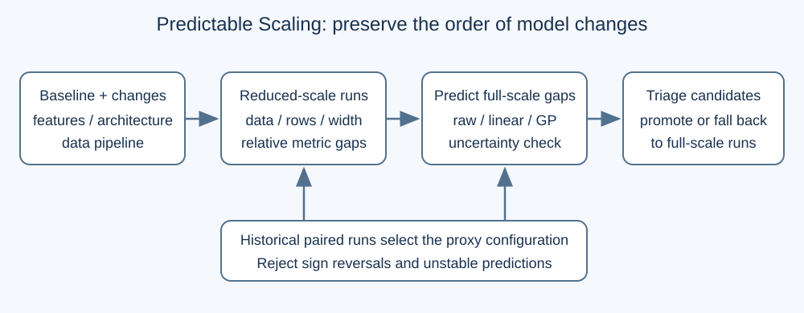
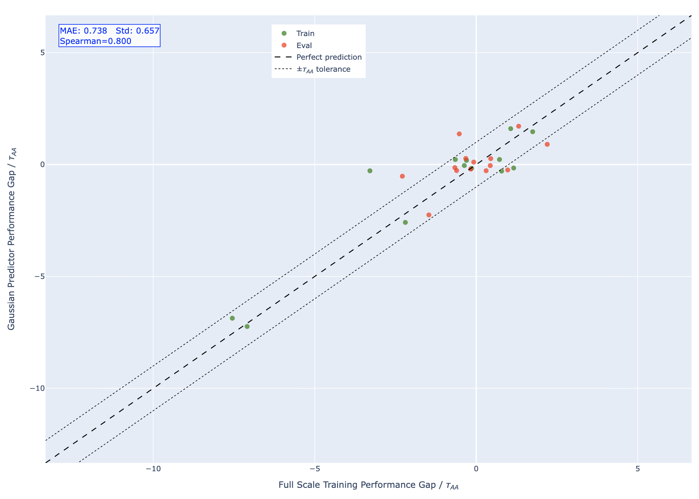
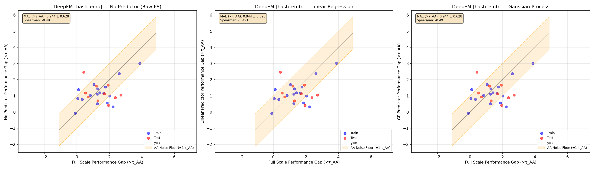

Predictable Scaling: Efficient Model Exploration via Scaling-Law Prediction
排序模型每次改动都跑完整训练，成本很高。Predictable Scaling用缩小的数据和网络预测改动收益，再用历史学习曲线估计误差；两个工业排序模型的训练计算量分别减少88%和79%。
INSIGHT小模型要保留改动之间的好坏次序，低预测误差本身不够。缩放方案必须按架构选择；论文公开实验中，单独压缩向量宽度可能把方案排序打乱。
把排序模型缩小来试改动，只有在小模型仍能判断哪个改动更好时才有意义。Meta的Predictable Scaling把这个条件变成一套可检查的实验流程。它要节省的是模型研发的试验成本，而不是宣称把线上模型直接压缩后还能维持同样效果。
一、问题与动机：模型研发也有算力瓶颈
推荐模型不断加入新特征、调整交互结构或修改数据采样。每个想法单看都不大，但要判断它是否值得上线，通常需要完成一次大规模训练。当单次试验昂贵时，团队会因为验证成本而放弃探索大量候选。
直觉上可以缩小网络或减少数据。然而推荐系统并不是均匀的语言模型：嵌入表、交叉网络、历史编码器和任务头互相耦合。压缩某一部分可能改变原本的瓶颈，让在小模型上有效的特征在完整模型上失效，甚至颠倒方案次序。
论文把目标改成预测“相对基线的变化”，而不是预测模型最终绝对损失。研发决策往往只关心某项改动有没有实质改进、是否比另一个方案更好，这样的预测对象更贴近实际工作。
二、方法：选代理，也检查代理有没有失真
流程先保留一个基线，然后对每个候选改动生成对应的小规模版本。基线与改动必须在相同缩放条件下配对训练，再计算两者的指标差距。否则，小规模设置本身带来的差异会混进改动收益。
论文采用归一化熵衡量点击或转化预测误差。它把预测交叉熵与按总体正例率得到的参考熵相比；数值越低越好。相对变化为负代表候选优于基线，这个方向在读取图表时尤其容易看反。
缩放有几种不同旋钮：减少训练样本、减少嵌入表行数、缩短嵌入向量、删减特征、统一缩小隐藏维度、减少网络层数。它们可以组合，但组合后的失真不等于各自失真的简单相加。因此作者用已有完整训练结果的候选集合来挑选配置。

预测器也分层。最简单的是直接把小模型差距当成大模型差距。线性回归在二者关系接近直线时校正偏移。经验高斯过程则从历史学习曲线估计均值和相关结构，外推当前代理训练的收敛趋势，并提供不确定性。
高斯过程不是万能的排序修复器。它需要历史实验提供可重复的关系；当预测相对不确定性过大时，流程拒绝给出可靠判断，让该候选回到完整训练。小模型把信息毁掉以后，换一个更复杂的拟合器并不能凭空补回来。
作者还把稳定收敛、可迁移差距和改进方向保留等条件列为检查项。在预算允许的配置里，先交叉验证预测误差，再检查改动排序及正负号翻转。论文给出的搜索流程限制组合深度，避免配置枚举本身成为昂贵的新任务。
三、核心贡献：把“能缩小”换成“能筛方案”
这套流程的价值在于，它把训练成本、预测误差和研发决策串起来。过去常见的做法是统一缩小所有模型；这里要求代理用历史证据证明自己适合当前架构，然后才承担新方案的初筛工作。
另一个重要选择是用重复训练估计噪声底线。相同模型重跑也会有波动，低于这条线的差异未必值得当成真实收益。论文对“可采取行动的改动”单独计算排序质量，避免把一堆几乎相同的结果硬排出胜负。
这也解释了为什么不能只看平均预测误差。所有预测都靠近零，可能得到不错的平均误差，却完全不知道谁更好。对于要决定下一次大训练投给谁的团队，排序保持与误差大小同样关键。
四、实验结果：省下的是试验训练量
主要工业实验包含一个面向信息流点击与转化的任务模型，以及一个多任务基础模型。它们都在大规模内部数据上训练；论文还用公开Criteo数据测试多种常见推荐结构，检查方法是否依赖单一工业架构。
| 检查对象 | 直接代理误差 | 高斯过程误差 | 解释 |
|---|---|---|---|
| 任务模型CTR | 0.865 | 0.738 | 误差下降约15% |
| 基础模型CTR-1 | 2.150 | 0.701 | 误差下降约67% |
| 基础模型CTR-2 | 1.750 | 0.753 | 误差下降约57% |
| 基础模型CVR-1 | 0.950 | 0.854 | 收益较小 |
表中误差单位是重复训练噪声尺度，并不是点击率百分点。任务模型上的平均绝对误差改进只有指示性意义，标准误并不小；基础模型部分任务头的改善更明显，说明复杂模型中代理与完整模型之间的偏移更值得拟合。

工业模型的训练计算量分别减少88%和79%。作者用训练设备数量、样本数量及吞吐一起估算这项成本，而不是只报告模型参数变少。代理吞吐可能降低，但更少的设备和样本仍能让总消耗显著下降。
对超过噪声底线的工业候选，论文报告完整的次序保持。这个结论有特定对象：它并不表示全部候选、所有架构或每个公开实验的排名相关性都完美。
公开模型尤其暴露了边界。不同架构最合适的缩放方式不同；仅压缩嵌入宽度，多个模型的排序都会变差。DCN-v2的最佳配置仍只有中等程度的排序保持，说明平均误差进入噪声范围，也不一定足以准确筛选候选。

五、局限：缩放改变了问题，拟合就会失效
作者在公开实验中明确讨论，交叉网络等强耦合结构较难缩放。小模型一旦丢掉决定特征交互的维度，收益映射可能不再稳定。高斯过程可以修正部分曲线偏移，却修复不了结构性的信息损失。
数据下采样也依赖原始规模。在极大的内部数据上少取一部分仍可能保留信号，在较小公开数据上同样比例却会删掉重要样本。因此论文没有提供一个可无条件复用的最佳压缩比例。
工业证据主要围绕离线归一化熵，未来工作才包括更多在线指标。论文报告的研发计算节省不能换算成同等广告收入或CTR收益；代理选出了更有希望的候选，线上业务效果仍由后续试验决定。
本文补充一个运行层面的限制：历史改动库需要维护。更换主干架构或特征管线后，旧代理配置可能已不再保留相同关系。论文流程允许不确定时退回完整训练，这条出口应当成为系统行为，而不只是文档里的备注。
六、工业实践意义：怎样接入现有实验平台
第一项可做的是建立成对实验账本。每条记录同时保存基线、候选改动、缩放配置、最终指标、学习曲线和实际计算消耗。记录实验的相对变化，比只保存一次训练的最终分数更适合训练代理预测器。
第二项是用历史已知结果离线回放筛选过程。把部分候选隐藏起来，看代理会错过多少真正有收益的方案，以及多少次把改进方向判断反了。对于社区搜索排序，既检查点击预测误差，也保留与搜索相关性指标的独立关联分析。
第三项是把预算分成探索和确认。大量想法可以用经过校验的小规模配置探索；收益接近噪声线、排序冲突或不确定性较大的改动，继续投入完整训练。团队真正要优化的，是在固定算力里发现多少可信的新方案。
原文：https://arxiv.org/html/2610.23453v1 。方法与数字来自正文及附录；流程图为机制示意，实践建议为本文分析。